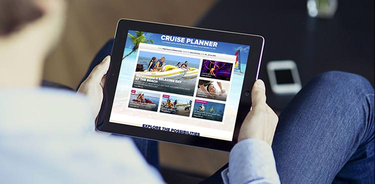

<div class="page restaurant_bgc " id="page-shipwefi" >
<div class="content">
	<div class="shipwefi_head">
		
	</div>

	<div class="restaurant_box" >
		<div class="restaurant_cont" >海洋量子号上提供了高速上网服务，在海上观看网络电影，听音乐，视频聊天，关注股票，下载文件，微信聊天等。连接只“Royal wifi”皇家无限网络即可享受极速网上冲浪。</div>
	</div>
	<div class="restaurant_ticolor">全程套餐(总价受航线天数影响)</div>
	<div class="restaurant_box" >
		<div class="shipwifi_cb">2台设备同时上网<br/></div>
		<div class="shipwifi_cb70 mg_b1" >
			平均7.5美元/台设备/天
			<span class="shipwifi_fr" ><span class="shipwifi_price">$15</span>×航程总天数</span>
		</div>
		<div class="shipwifi_cb">1台设备同时上网<br/></div>
		<div class="shipwifi_cb70">
			平均10美元/台设备/天
			<span class="shipwifi_fr"><span class="shipwifi_price">$10</span>×航程总天数</span>
		</div>
	</div>
	<div class="restaurant_ticolor">单日套餐</div>
	<div class="restaurant_box" >
		<div class="shipwifi_cb">单台设备上网<br/></div>
		<div class="shipwifi_cb70 "  >
			平均30美元/台设备/天<br/>
			仅限一台设备使用24小时
			<span class="shipwifi_fr" ><span class="shipwifi_price">$30</span>/天</span>
		</div>
	</div>

	<div class="shipwifi_bo">
		<a href="#" class="button shipwifi_ydwifi">预定Wifi</a>
	</div>
</div>
</div>